| CONSOLAS |
FECHA DE REVELACION |
FECHA DE LANZAMIENTO |
PRECIO DE LANZAMIENTO |
ULTIMO JUEGO QUE SALIO |
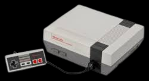
Nintendo Entertainment System (NES)
|
La Nintendo Entertainment System (NES), lanzada como Famicom en Japón,
fue revelada el 15 de julio de 1983. En América del Norte, |
la NES fue lanzada el 18 de octubre de 1985, y en Europa el 1 de septiembre de 1986. |
En Estados Unidos, los precios se fijaban habitualmente entre 200 y 500 dólares , en comparación con su precio de lanzamiento de 59,99 dólares.
|
El último juego de NES lanzado fue "El Rey León" en Europa (PAL) en mayo de 1995. En Norteamérica, el último juego fue "Wario's Woods", lanzado en diciembre de 1994. |
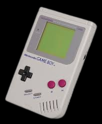
GAME BOY
|
La consola Game Boy original fue revelada el 21 de abril de 1989 en Japón. Luego, se lanzó a nivel global en otros mercados.
|
Fecha de lanzamiento. 21 de abril de 1989; 31 de julio de 1989; 28 de septiembre de 1990. Descontinuación, 31 de marzo de 2003. |
El Game Boy original fue lanzado a un precio de US$89.95, equivalente a $221.19 en 2023. También se vendió por £99 en el Reino Unido y ¥12,800 en Japón. |
El último juego oficial lanzado para la Game Boy original fue Pokémon Edición Amarilla en 1998, justo después del lanzamiento de la Game Boy Color. |
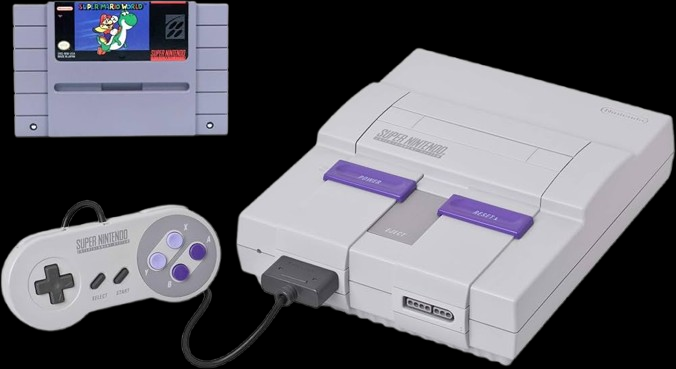
SUPER NINTENDO
|
La Super Nintendo Entertainment System (SNES) fue revelada por primera vez en Japón como Super Famicom el 21 de noviembre de 1990 |
En América del Norte, fue lanzada en agosto de 1991, mientras que en Europa y Australia fue lanzada en 1992. |
La Super Nintendo Entertainment System (SNES) se lanzó en Norteamérica por 199 dólares estadounidenses en 1991 |
El último juego de Super Nintendo que se produjo en un cartucho físico fue Fire Emblem: Thracia 776, lanzado el 21 de enero de 2000. |

VIRTUAL BOY
|
La consola Virtual Boy de Nintendo fue revelada en público en 1995, dando una grata sorpresa por ser algo muy diferente a lo que conocian en ese momento como consolas |
Fue lanzada en Japón el 21 de julio de 1995 y en Norteamérica el 14 de agosto de 1995. |
El Virtual Boy se lanzó a un precio de alrededor de $180 en 1995. Este precio era relativamente alto, especialmente considerando que la consola no era una consola doméstica de pleno derecho y se consideraba menos potente que otras consolas de la época. |
El último juego de Virtual Boy lanzado oficialmente fue 3D Tetris, que salió a la venta el 22 de marzo de 1996. |
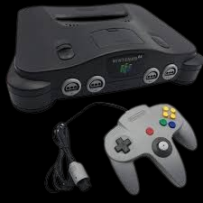
NINTENDO 64
|
La Nintendo 64 fue revelada oficialmente en la Electronic Entertainment Expo (E3) en mayo de 1996 en Los Ángeles |
La consola fue finalmente lanzada en Japón el 23 de junio de 1996, en América del Norte el 29 de septiembre de 1996 y en Europa y Australia el 1 de marzo de 1997. |
El precio de lanzamiento del Nintendo 64 fue de 199 dólares en Estados Unidos. En Japón, el precio era de 209,99€. En Europa, |
El último juego lanzado oficialmente para la Nintendo 64 fue Tony Hawk's Pro Skater 3, lanzado en Norteamérica el 20 de agosto de 2002. |
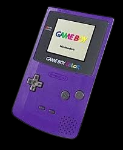
GAME BOY COLOR
|
La Game Boy Color fue revelada a nivel mundial en noviembre de 1998, |
La Game Boy Color ( en japonés :ゲームボーイカラー, GBC o CGB ) es una consola portátil de 8 bits fabricada por Nintendo , lanzada en Japón el 21 de octubre de 1998 y a los mercados internacionales en noviembre de ese mismo año. |
La Game Boy Color se lanzó a un precio de 79.95 dólares estadounidenses (USD) en 1998. |
El último juego de Game Boy Color lanzado fue Doraemon no Study Boy: Kanji Yomikaki Master en Japón el 18 de julio de 2003. |

GAME CUBE
|
La consola Nintendo GameCube fue revelada el 14 de septiembre de 2001 en Japón y el 18 de noviembre de 2001 en América |
Se lanzó en Japón el 14 de septiembre de 2001, en Norteamérica el 18 de noviembre de 2001, en Europa el 3 de mayo de 2002 y en Australia el 17 de mayo de 2002 |
El GameCube se lanzó a un precio de 199 dólares estadounidenses. |
El último juego lanzado oficialmente para la Nintendo GameCube fue Madden NFL 08, que se lanzó en Norteamérica en agosto de 2007. |
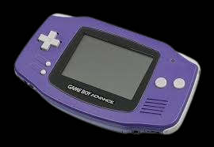
GAME BOY ADVANCE
|
Nintendo anunció oficialmente el Game Boy Advance el 1 de septiembre de 1999 |
La Game Boy Advance fue lanzada en Japón el 21 de marzo de 2001, y en los mercados internacionales en junio del mismo año. En China continental, se lanzó en 2004 con el nombre de iQue Game Boy Advance. |
El Game Boy Advance se lanzó a un precio de US$99.99. En Japón, fue lanzado a un precio de ¥12,000. La consola fue lanzada en Japón el 21 de marzo de 2001 y a los mercados internacionales en junio del mismo año. |
El último juego con licencia lanzado para Game Boy Advance en Norteamérica fue Samurai Deeper Kyo, lanzado el 12 de febrero de 2008. |
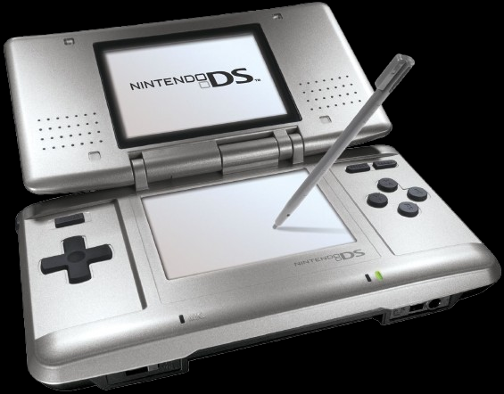
NINTENDO DS
|
La consola Nintendo DS fue anunciada bajo el nombre clave "Nintendo DS" el 20 de enero de 2004. |
Fue lanzada en Japón el 2 de diciembre de 2004, en Norteamérica el 21 de noviembre de 2004 y en Europa el 11 de marzo de 2005. |
Nintendo DS era una consola bien tratada, económica (en España se puso a la venta por 150 euros) y con un generoso catálogo de videojuegos. |
El último juego lanzado físicamente para la Nintendo DS original fue Big Hero 6: Battle in the Bay, el 28 de octubre de 2014. |
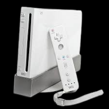
NINTENDO WII
|
La Nintendo Wii fue revelada el 19 de noviembre de 2006 en Norteamérica y en diciembre de 2006 en la mayoría de las demás regiones del mundo. |
Se lanzó el 19 de noviembre de 2006 en Norteamérica y en diciembre de 2006 en la mayoría de las demás regiones del mundo. |
El precio de lanzamiento de la consola Nintendo Wii fue de 250 dólares estadounidenses. |
El último juego lanzado para la consola Wii a nivel internacional fue Just Dance 2020 |
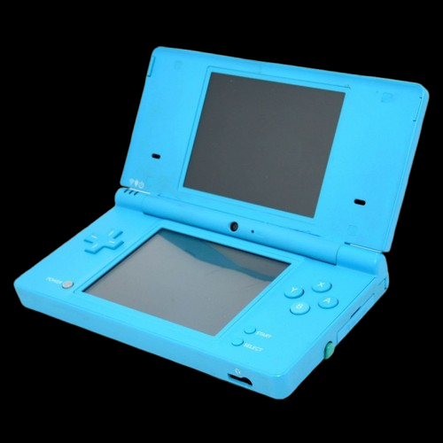
NINTENDO DSI
|
La Nintendo DSi fue revelada oficialmente en octubre de 2008. Se lanzó en Japón el 1 de noviembre de 2008 y en el resto del mundo a partir de abril de 2009. |
Se lanzó en Japón el 1 de noviembre de 2008 y en Estados Unidos y los países de Europa en 2009. Es la tercera versión del Nintendo DS |
El precio de lanzamiento de la Nintendo DSi fue de $150 dólares en Estados Unidos. En Europa, se vendió por 150 euros. Nintendo posteriormente redujo el precio de la DSi a $100. |
El último juego lanzado para la Nintendo DSi fue "Crazy Train" de DSiWare, el 28 de enero de 2016. Aunque la producción de la DSi cesó en 2014 |
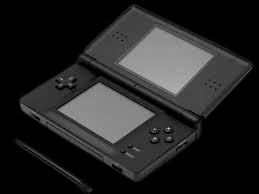
NINTENDO DS LITE
|
La Nintendo DS Lite fue revelada oficialmente el 26 de enero de 2006. |
Se lanzó al mercado el 2 de marzo de 2006 en Japón, y posteriormente en otras regiones como Australia, Norteamérica, Europa y Corea del Sur. |
l precio de lanzamiento de la Nintendo DS Lite fue de $129.99 USD en Estados Unidos y $149.99 CAD en Canadá. En Europa, costaba £99.99 |
El último juego lanzado físicamente para la Nintendo DS original, que también funcionaba en la DS Lite, fue "Big Hero 6: Battle in the Bay", lanzado el 28 de octubre de 2014. |
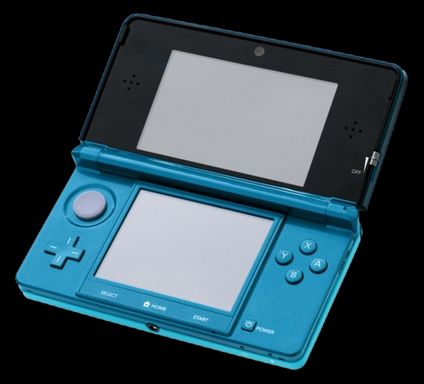
NINTENDO 3DS
|
La Nintendo 3DS fue revelada oficialmente en el E3 2010 el 15 de junio. Nintendo anunció el dispositivo previamente en marzo de 2010. |
La consola fue lanzada en Japón el 26 de febrero de 2011, seguida de lanzamientos en Europa, América del Norte y Australia en marzo. |
El precio de lanzamiento de la Nintendo 3DS fue de 249.99 dólares en Norteamérica. |
El precio de lanzamiento de la Nintendo 3DS fue de 249.99 dólares en Norteamérica. |
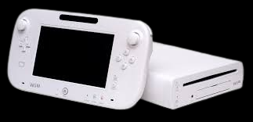
WII U
|
El 13 de septiembre de 2012, Nintendo anunció que la Wii U se lanzaría en Japón el 8 de diciembre de 2012. |
Más tarde ese día, Nintendo anunció que la fecha de lanzamiento en Norteamérica sería el 18 de noviembre de 2012. |
La Wii U se lanzó en Norteamérica a un precio de US$299,99 para el Paquete Básico y US$349,99 para el Paquete Deluxe |
El último juego lanzado para Wii U fue un dúo de juegos de terror, Silver Falls: Undertakers y Silver Falls: White Inside Its Umbra, lanzados el 16 de febrero de 2023 en Norteamérica. |
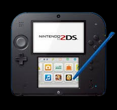
NINTENDO 2DS
|
a Nintendo 2DS fue anunciada en agosto de 2013 |
se lanzó en Norteamérica, Europa y Australia el 12 de octubre de 2013, el mismo día que Pokémon X e Y. |
«Nintendo 2DS disponible el 12 de octubre por $130, siendo compatible con todos los juegos de 3DS y DS» . |
El último juego lanzado para la Nintendo 2DS en Japón fue probablemente la última actualización o parche de un juego existente, ya que la consola se discontinuó en Japón en 2019 |
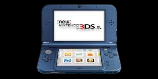
NEW NINTENDO 3DS XL PRO PLUS SKELER
|
La Nintendo 3DS XL fue anunciada el 21 de junio de 2012 a través de un Nintendo Direct. Su lanzamiento en Europa fue el 28 de julio de 2012, |
La Nintendo 3DS XL fue lanzada en Japón el 15 de noviembre de 2012, en Europa el 22 de marzo de 2013 y en América del Norte el 17 de abril de 2013. |
En América del Norte, salio con un precio de US$199,99 y disponible en azul + negro y rojo + negro. |
Silver Falls Gaiden: Deathly Delusion Destroyers", disponible en la eShop el 9 de marzo de 2023, unas dos semanas antes del cierre de la eShop |
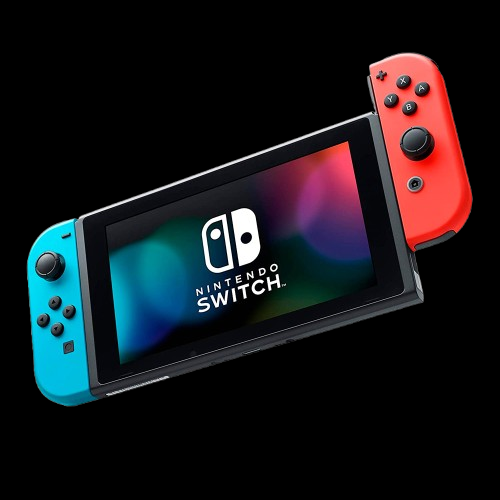
NINTENDO SWITCH
|
El 20 de octubre de 2016, mediante un video de algo más de tres minutos, la consola fue presentada bajo el nombre comercial de Nintendo Switch. |
Lanzada a mediados de la octava generación de consolas, Switch sucedió a Wii U y compitió con PlayStation 4 de Sony y Xbox One de Microsoft; también compite con las consolas de novena generación, la Switch se lanzo el 3 de marzo de 2017. |
El precio de lanzamiento de la Nintendo Switch original fue de 299.99$ dólares en Estados Unidos. |
"Pikmin 4" para Nintendo Switch y la expansión "Pikmin Bloom". Para obtener información sobre los juegos más recientes, se puede consultar el sitio web oficial de Nintendo. |

NINTENDO SWITCH LITE
|
Fue anunciada por Nintendo en julio de 2019. |
La consola Nintendo Switch Lite fue lanzada a nivel mundial el 20 de septiembre de 2019 |
a Nintendo Switch Lite sale fresco al mercado con un precio de 219,95$ euros. |
al ser una version lite se tendria en cuenta los mismos juegos que la switch normal, solo teniendo el condicionante de que debe ser si o si compatible con el modo portatil. |
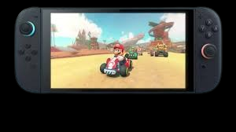
NINTENDO SWITCH 2
(PROXIMAMENTE) |
La revelación de la Nintendo Switch 2 fue el 2 de abril de 2025. Nintendo realizó un Nintendo Direct para presentar oficialmente la nueva consola |
(5 de junio) |
El Nintendo Switch 2 se lanzará con un precio de $449.99 dólares en los Estados Unidos.Contando con un paquete que incluye la consola y Mario Kart World por $499.99. |
Nintendo switch 2 tendra varios juegos disponibles a la fecha de su salida, siendo el ma destacados mario kart world |


 HISTORIA
HISTORIA